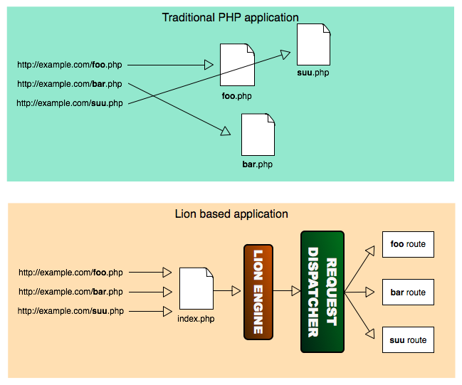

<table cellpadding="10" cellspacing="0" width="100%" border="0"><tr><td valign="top">
<div><a name=""></a><h1>Request Dispatcher</h1>
  <div class="ref-purpose">How request are dispatched and routed</div>
 <div class="ref-synopsis"></div>
<h2>Table of Contents</h2>
<ul>

<a href="Request/tutorial_Request.pkg.html#intro">Introduction</a><br />

<a href="Request/tutorial_Request.pkg.html#urlRouteEngine">The URL Routing Engine</a><br />
</ul>

 <p></p>
  <span><a name="intro"></a><h2>Introduction</h2><p>In Lion, all the requests are redirected to the same .php file: the <strong>index.php</strong> file. It doen't matter if you request for a foo.html or a bar.php file, the index.php file will be executed instead of.<br />
   <div class="messagebox floatnote metadata plainlinks"><div class="floatnoteicon"></div><br>Note that the <strong>.htaccess</strong> redirects all incoming requests to the index.php.<br />That's the reason because you may need to enable the mod-rewrite (or equivalent) in your web server.</div>
   For that purpose, our applications must have a <strong>.htaccess</strong> in order to perform the mentioned redirection.</p>
   <p>In Lion we don't have multiple .php files to be executed directly from the browser, as we are accustomed in traditional php applications.<br />
   In that sense, a URL like http://example.com/foo.php does not corresponds to a file foo.php in the web-root of our server.</p>
   <p>Instead of that, Lion parses every incoming request and determines where to route each request to based on our own rules.</p>
   <p></p>
   <p>This approach has several advantages, being some of them:</p>
   <ul><li>We can define and use friendly URLs easily (i.e. <i>http://yourdomain.com/invoices/10948.html</i> instead of <i>http://yourdomain.com/index.php?module=invoices&amp;view_id=10948</i>)</li>
     <li>We can change our URLs without refactorizing our file structure (i.e. changing <i>http://example.com/catalog.html</i> to <i>http://example.com/<strong>games</strong>/catalog.html</i> does not implies to create a <strong>games</strong> directory)</li>
     <li>We can change our URLs without finding and replacing URL occurrences in our code. We just specify the new URL format and every occurrence of the URL will be adapted automatically by the framework.</li>
     <li>We can configure filters (intercepting filter) associated to URLs declaratively.</li></ul></span>
 <span><a name="urlRouteEngine"></a><h2>The URL Routing Engine</h2><p>The URL Routing Engine is one of the key pieces within the framework: Is the one in charge of resolve where to route each request to.</p>
   <p>In that sense, all the requests are sent to the Url Routing Engine in order to resolve a route or the other one based on the configuration where our routes are declared in.<br />
   Out of the box, routes are declared within the <strong>app/config/routes.xml</strong> file.</p>
   <p>A route is basically the combination of 3 elements: A <strong>Front Controller</strong> to handle the request, an <strong>Action Controller</strong> to be executed and a set of <strong>Parameters</strong> to be added to the request.</p>
   <p>Additionally, a route has associated some filters (intercepting filters) that are executed before the Front Controller receives the request and after it returns the response.</p></span></div>
      </td></tr></table>